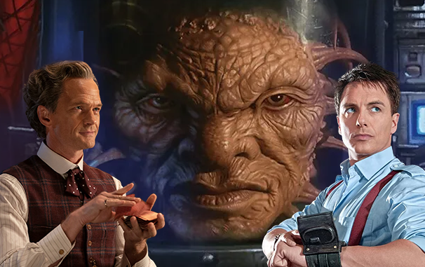

Doctor Who Toymaker Theory Explains
How Captain Jack Became The Face Of Boe
By Craig Elvy ❀ Published Dec 15, 2023

WARNING!
Spoilers ahead for Doctor Who's "The Giggle."
Summary
- Doctor Who's 60th anniversary special reveals the Toymaker's connection to the Timeless Child and the invention of TV.
- The Toymaker may have played a game with Captain Jack Harkness, possibly turning him into the Face of Boe.
- The Toymaker offers a potential explanation for the Face of Boe's existence, but it is unlikely to be explored further due to external factors.
Doctor Who's 60th anniversary special reveals the Toymaker had a hand in the Timeless Child, the invention of TV, and much more, but he may have also played a game with Captain Jack Harkness. One of the biggest twists from Russell T Davies' first stint as Doctor Who showrunner was the reveal that Torchwood's Jack Harkness would eventually become the Face of Boe - a big face floating in a jar. Frustratingly, Doctor Who TV canon has still not bridged that gap. Rose's Bad Wolf form made Jack immortal, but at some point during the millennia he was alive, the universe's randiest Time Agent became a giant head, and it remains unclear how.
This seems to be one of few Doctor Who mysteries RTD doesn't use the Toymaker to solve in Doctor Who's "The Giggle." When Neil Patrick Harris' villain faces David Tennant's Fourteenth Doctor in a game of cards, the Toymaker proclaims he "made a jigsaw out of your [the Doctor's] history." Speaking on Doctor Who: Unleashed, RTD explained this was intended as a loosening of the rules that could account for Doctor Who's Timeless Child retcon, the Eighth Doctor's claim about being half-human, and anything else that didn't quite fit. In a strange way, the Toymaker might have also addressed how Captain Jack transformed into the Face of Boe.
The Toymaker Claimed
He Turned God Into
A "Jack-In-The-Box"

When the Toymaker is boastfully listing his many achievements since crossing into Doctor Who's main universe, he mentions, "I gambled with God - and made him into a Jack-in-the-box." The initial implication here is that Doctor Who's Toymaker made a beeline for whatever passed as the monotheistic deity of the universe, played a game with it, won, and then turned this entity into a toy for his own amusement, just as he does to the UNIT soldiers in "The Giggle." According to one theory (via X user Tigfore), however, the Toymaker's "Jack-in-the-box" remark may have been a sneaky reference to turning Jack Harkness into the Face of Boe.
Across Doctor Who seasons 1-3, the Face of Boe was treated as a big deal, with loyal followers that would accompany and care for him towards the end of his life. The 2018 audio story "Escape from New York" went further, and included a reference that suggested the Face of Boe had come to be considered a God in humanity's future. When the Toymaker says he "gambled with God," therefore, he certainly could mean Captain Jack Harkness. "Jack-in-the-box" would then be a very wry nod to the Toymaker turning Jack into a face inside a jar.
Why The Toymaker Turning
Captain Jack Harkness Into
The Face Of Boe Makes Sense
Using the phrase "Jack-in-the-box" to refer to the Face of Boe fits perfectly with the morbid, toy-centric sense of humor Neil Patrick Harris' version demonstrates throughout "The Giggle." More importantly, Jack Harkness was both a friend of the Doctor's and an immortal being, tickling two of the Toymaker's areas of interest. Given how long Jack was alive, it seemsinevitable that the Toymaker would have approached him. Just like the Doctor, Jack would have realized that his best bet was defeating the villain at his own game. Jack then lost, and - with all due respect to Boekind - had his trademark good looks taken away as punishment.
This would actually answer two big questions hanging over the Jack Harkness-Face of Boe connection. Given that Boe is allegedly the future form taken by Jack Harkness, it seems strange that Doctor Who also mentions an entire species known as Boekind. Secondly, Jack is supposed to be immortal, but eventually dies after becoming the Face of Boe. Boekind may have been a preexisting species that the Toymaker decided was a fitting form for Jack Harkness to take, and the villain is also powerful enough to undo the TARDIS mojo keeping Jack from dying. As the Fourteenth Doctor himself admits, "the TARDIS is an idea the Toymaker would throw away."
The Toymaker Is
Doctor Who's Best Chance At
Explaining The Face Of Boe

Since Russell T Davies is dipping into Doctor Who lore and pulling out the Meep, Mel, and the various deep-cut Easter eggs in Tales of the TARDIS, one cannot rule out Doctor Who explaining the full story behind the Face of Boe in a future season. Due to external factors, however, this is incredibly unlikely. Controversy surrounding his initial run on the show has likely scuppered any chance that John Barrowman will return in Doctor Who season 14 and beyond, ending hopes of continuing Captain Jack's story.
Without Barrowman, recounting the story of how Jack became the Face of Boe would be tricky, which leaves blaming the Toymaker as the most straightforward answer. This also avoids the problemof "God" in Doctor Who. If the Toymaker turned the universe's actual God into a Jack-in-the-box, this not only means God no longer exists in the show's canon, but for the first time since the Tenth Doctor beat the devil, questions are raised over the nature of Doctor Who's religious mythology. If the "God" mentioned by the Toymaker was only Captain Jack, those problems no longer apply.
Sources: Tigfore (via X)
https://screenrant.com/doctor-who-captain-jack-toymaker-
face-of-boe-theory/